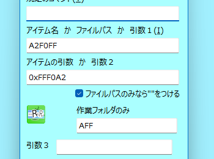
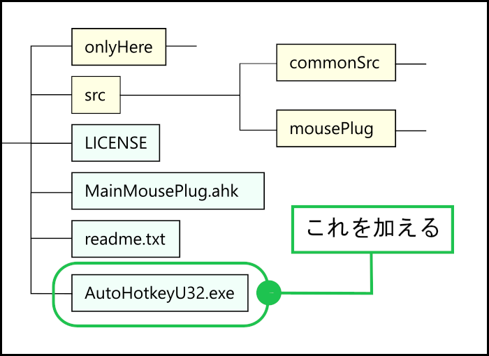
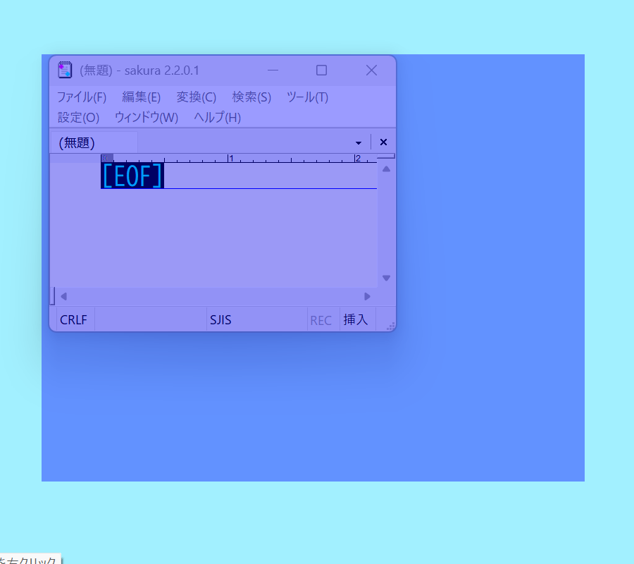
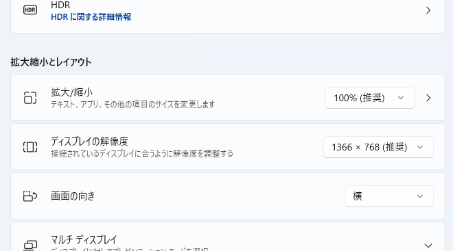

マウスの動きを登録する追加機能 mousePlug。その２
前書き
mousePlug の説明の続きをします。
前回のページでも一応書いておいた事ですが、
Gosub, Mou_Plug_SubMenuEvery
これを使うと、
mousePlug
のメニューが表示します。
mousePlug
のソースコードが正しく追加されている場合の話ですが

mousePlug を使うなら、このスクリプトを 常時使用のキー か アイテム にしておくことを薦めます。
色を取得
メニューに、 色を取得 という項目があります。
単純にこれは、マウスの位置の色を「RGB」形式の６桁の数字で表す様にしているものです。
色を取得 を選ぶとまず、マウスが少し移動する様になっています。
これは、マウス自体の色を取得してしまうのを防ぐためです。
そして、 分割テキスト に取得した色を記入する様になっています。

なぜ 分割テキスト の方に記入する様になっているのかですが、これといった理由はありません。
作者のブランボンにとっては、特にそれで不便に感じた事はないのでとりあえずこの仕様のままにしています。
ちなみに、３パターン記入されています。ですので一応説明しておきます。
-
一つ目は、よくある「RGB」形式の６桁の「16進数」で表しています。
-
二つ目ですが、この色の取得は PixelGetColor の AHKコマンド を使って色を取得しています。
これを使うと、「BGR」の形式、つまり、「RGB」の時と、青と赤の数字の箇所が入れ替わっている形式で表される様です。
この二つ目のは、この PixelGetColor で得た値をそのまま記述したのがこの箇所です。
-
三つ目は、「RGB」形式の「16進数」を３桁で表しているというだけです。
色を取得 の説明は以上です。
スクリプトで使う
この mousePlug は TRR に追加して、スクリプトから使う事を前提に作られているものです。
ここでは一応、紹介しておいた方がいいと思うスクリプトを挙げておきます。
アイテム か何かにして使いやくすしておくといいと思います。
mousePlug のメニューを表示する。
Gosub, Mou_Plug_SubMenuEvery
しつこいくらいに何度も書いている事ですが、 mousePlug の代表的なメニューなのでこれを用意して使った方がいいと思います。
ちなみに、メニュー名が Mou_Plug_MenuEvery なので、
Menu, Mou_Plug_MenuEvery , Show , %Mou_Plug_O_menuPosX% , %Mou_Plug_O_menuPosY%
これを使ってもほぼ同じです。
登録 のウインドウを表示する。
Gosub, Mou_Plug_SubShowEntryClickPoint
これを表示させます。

ただそれだけです。
マウスの登録 のウインドウの クリックポイント の のボタンと同じ。
Mou_Plug_showClickPointSetFromMousePos( )
この関数を実行すると、マウスの位置の数字を クリックポイント 用の「マウスの位置を数字で指定するウインドウ」の指定欄に記入します。
もしくは、
Mou_Plug_clickPointSaveFromMousePos( 1 )
この関数を実行すると、 マウスの登録 のウインドウの クリックポイント の種類のリストの set1 に、今のマウスの位置の数字を登録します。
引数の指定の 1 の部分を 2 に変えると set2 に登録します。
登録した後は
Mou_Plug_clickPointClickFromEntryList( 1 )
この関数で、 set1 に登録した位置を左クリックします。
マウスをドラッグする関数。
Mou_Plug_assignToAssign( startX, startY, endX, endY, winTitle="A", screenFlag=True )
ただ単にマウスをドラッグするだけの関数です。
特に変わった処理はしていないため、
MouseClickDrag, Left , X1 , Y1 , X2 , Y2 [, Speed , R ]
この AHKコマンド を使った場合と同じといえば同じなので、あえてこの関数を使う必要はないかもしれないですが。
マウスの登録 のウインドウの 指定位置から指定位置 の種類のリストに登録してあるものを ( set1 などを ) 実行する関数。
Mou_Plug_assignToAssignFromEntryList( listNumber, winTitle="" )
これも、ただ単にマウスをドラッグするだけの関数です。
使うなら、 アイテム とか 常時使用のキー にして使える様にしておいてから使うとよいと思います。
mousePlug で使う用のサブルーチンや関数は沢山存在しています。
ですが、ほとんどは趣味で作った様なものばかりなので
(
TRR
事態がそんなものなのですが
)
使える様なものは、上の例に挙げたものぐらいかもしれません。
こだわりをもった使い方をしたい方や興味をもってくれた方は以下のページに全部書くようにしているのでそれを参考にしてください。
option.txt
windowPlug と同じなのでそちらを参考にしてください。
mousePlug の Gui は、 ( マウスの登録 のウインドウなど ) TRR の 設定 で指定する文字の大きさやフォント名の影響を受ける様になっています。
再起動が必要な設定 の方で指定するものの影響を受けます。
それとは別に、 マウスの登録 のウインドウの文字の大きさやフォント名を設定する方法を作っているのでそれの説明をします。
mousePlug
のソースコードを
TRR
に加えて、その後にそれを起動すると、
TRR
があるフォルダを基準として、
このファイルが作られる様になっています。
この option.txt には以下の事が記入されているはずです。
#設定をする。何も記入しなければ初期値を使用する。
#fontSize=12
#fontName=
#fontSizeSmall=10
#fontSizeTab=10
これに記入して文字の大きさやフォント名を指定できる様になっています。
# の文字はコメント文にするための文字です。
この文字が先頭にある行は、書いてる事が無効になります。
以下にそれぞれの説明をします。
fontSize
文字の大きさを指定します。
mousePlug の Gui の中のほとんどの文字がこの影響を受けます。
数字を指定してください。
何も指定しなければ、 12 が指定されます。
ただし、モニターの大きさなどによって多少の初期値が変わる様になっています。
fontName
文字のフォント名を文字列で指定します。
これも mousePlug の Gui の中のほとんどの文字がこの影響を受けます。
どのフォント名が有効になるかはユーザーのパソコンしだいです。
試しに
メイリオ
や
BIZ UDゴシック
などを記入すれば実験できるのではないかと思います。
fontSizeSmall
これも文字の大きさなのですが、 mousePlug の Gui の中の文字には、小さい文字がいくつかあります。
その文字は
fontSize
ではなく、こっちの
fontSizeSmall
の方の影響を受けます。
数字を指定してください。
何も指定しなければ、 10 が指定されます。
ただしこれも、モニターの大きさなどによって多少の初期値が変わる様になっています。
fontSizeTab
マウスの登録 のウインドウの上部にはタブがありますが、その文字の大きさはこれの影響を受けます。
数字を指定してください。
何も指定しなければ、 10 が指定されます。
ただしこれも、モニターの大きさなどによって多少の初期値が変わる様になっています。
この option.txt で設定した事は、 TRR 上で設定された事よりも優先されます。
先ほども書きましたが、この option.txt は無ければ自動で作られる様になっています。
ですので、文字の大きさが不自然だった場合などはこのファイルを削除してみてください。
今さらですが、 option.txt に限らず、この mousePlug で登録した情報などは
のフォルダ内に保存される様になっています。
つまり、 TRR の user フォルダ内に作られる様になっています。
単体で使う
この mousePlug は TRR のプラグインとして使うものだと説明しました。
基本的にはそうして使うものですが、 TRR に混ぜたりせずに、 mousePlug 単体で使う事もできます。
mousePlug を試しに使ってみたい方などはこの方法で使ってみるとよいと思います。
単体で使うには、 AutoHotkey.exe が必要です。
ソースコード版の TRR を使っているなら AutoHotkey.exe を使っているはずなのでそれをコピーして使えばよいです。
それを、 mousePlug をダウンロードした時のフォルダの中身、つまり MainMousePlug.ahk のファイルなどがあるフォルダに加えてください。

後は、この AutoHotkey.exe を、 MainMousePlug.ahk のファイルが引数になるようにして起動すれば、単体の mousePlug が使えます。
TRR の アイテム から使える様にするなら、
こんなものを用意して使う様にする。
ショートカットのファイルを用意して使うなら
これをリンク先に指定しているショートカットを作ってそれを使う事で mousePlug を単体で使う事ができます。
作業フォルダーは、無記入でも何を指定しても同じです。
MainMousePlug.ahk
がある位置が作業フォルダーになる様になっています。
当然ですが、単体で使った場合は TRR のスクリプトの中で関数やサブルーチンを使う方法はとれません。
ですが、 mousePlug を実験的に使う分には単体で使ってみた方がどんなものか理解しやすいと思います。
興味を持った方や、このホームページの説明でよく分からないと思った方は試しに単体で使ってみるのもよいと思います。
icon.ico
単体で使った場合は icon.ico の名前のファイルを置くとそれをアイコンとして使えます。
置く位置はトップの位置、つまり
AutoHotkey.exe
や、
MainMousePlug.ahk
がある位置です。
モニターの大きさの違いなどによる問題
今さらですが、実はこの mousePlug は、モニターの大きさの違いなどの原因で使い物にならなかったりします。
作者のブランボンが確認した範囲で分かっている事です。
パソコンを別のモニターに接続して、そのモニターだけの状態にした後に TRR を起動した場合、
マウスで登録する → ウインドウを指定する を選ぶと次の様になったりします。

この様に、対象にしているウインドウと青い部分の大きさが合っていません。
なぜこうなるかの原因を説明すると、
- 青い部分の大きさ
- 右クリックによって取得できるマウスの位置
これらに A_GuiX と A_GuiY を使っているからです。
どうやら、 AutoHotkey では、
- モニターのサイズが違う場合。
- Windows の設定の「拡大縮小のレイアウト」の設定で、 100% 以外を設定している場合。
- Windows の設定の「拡大縮小のレイアウト」の設定で、 ディスプレイの解像度が高い解像度の場合。
どうも、これらの場合では、 A_GuiX と A_GuiY で食い違いが生じる様です。
この問題があるので mousePlug はちゃんと機能しないようになります。
以上に挙げた問題が生じている場合、
メニューにある
色を取得
の動作もうまくいきません。
色を取得 は PixelGetColor の AHKコマンド を使用して色の情報を取得しています。
ですが「拡大縮小のレイアウト」の設定で、
100%
以外を設定している場合では、
PixelGetColor
の X や Y の位置の数字と、
MouseGetPos
で取得できる X や Y の位置に食い違いが生じるため、違う位置の情報を取得してしまいます。
この問題に対処する方法として分かっているのは以下の３つだけです。
-
「拡大縮小のレイアウト」の、
拡大／縮小 の設定が 100%
のパソコンのみで mousePlug を使う。 -
「拡大縮小のレイアウト」の、
拡大／縮小 の設定が 100%
のパソコンのほうで、 TRR を起動させて、 ( または、単体の mousePlug を起動させて )
その後に、 拡大／縮小 が 100% 以外になるモニターに移行して使う。
( または、 100% 以外の設定に移行する。 ) - 古めの AutoHotkey.exe を使う。
とりあえず、解決策はこれだけです。
これらを、もう少し以下に細かく書きます。
拡大／縮小が 100% のパソコンで使う
さっきから言っている、
拡大／縮小
が
100%
とは、
Windows の「設定」の、「システム」→「ディスプレイ」を選ぶと登場する「拡大縮小のレイアウト」の設定に関する事です。

Windows 11 の設定ではこの様な画面で設定するやつです
この
拡大／縮小
の設定が
100%
であるなら、
mousePlug
は問題なく使えます。
ですが、 100% 以外の設定にしている環境で使っている場合、 mousePlug で指定する数値とすれ違いが生じるため、想定した位置と違う位置で動作するといった事が起きます。
「別のモニターに繋いで、そのモニターで使う」といったことをすると、この
拡大／縮小
の設定は自動的に変更になったりします。
(
その場合、別のモニターに繋ぐのをやめると、自動的に設定が元に戻ったりする様です。
)
ですので、 mousePlug を使う時は、その事を気をつける必要がある事を知っておいてください。
拡大／縮小が 100% のパソコンで、 TextRunRun を起動させておき、その後モニターを変える
拡大／縮小 の設定が 100% 以外の設定のパソコンで使った場合は mousePlug で食い違いが生じると書きました。
ですが、 拡大／縮小 の設定が 100% の設定の時に TextRunRun を起動させておくと ( または、単体の mousePlug を起動させておくと ) 、その食い違いは発生しない様です。
どうやら 拡大／縮小 の設定が 100% 以外の時に、 AutoHotkey を起動すると、 A_GuiX と A_GuiY と、 Gui による位置や大きさの数字が普通の時と食い違うという事が起きるようです。
その後で、Windows の 拡大／縮小 の設定を 100% 以外の設定に変更した場合は、 A_GuiX と A_GuiY と、 Gui による位置や大きさの数字が普通の時と食い違うという事は起きません。
それと同じく、モニターを変更して 拡大／縮小 の設定が 100% 以外に自動的に変更されてしまっても、食い違いは発生しません。
拡大／縮小
の設定が
100%
以外の環境の時に
Reload
を使って再起動すると、
A_GuiX
と
A_GuiY
と
Gui
の位置や大きさがおかしくなる問題がまた起きます。
なのであくまで、どの設定の時に
TRR
を
(
または、単体の
mousePlug
を
)
起動させたかどうかで影響があるので、
拡大／縮小
の設定が
100%
の時に起動させておくという対処法があります。
古めの AutoHotkey.exe を使う
古い AutoHotkey だと、この問題が起きない様です。
そう言いたいところですが、かなり古いバージョンの話になるのであまり現実的ではなかったりします。
AutoHotkey のホームぺージで配布してあるもので一番古いものでも
AutoHotkey112207
(
1.1.22.07
のバージョン
)
2015年製のもの
が一番古い様です。
残念な事に、これでもまだその
「拡大／縮小
の設定が
100%
以外の時に
A_GuiX
と
A_GuiY
と
Gui
の位置や大きさがおかしくなる問題」
が起きます。
ここでいう古いバージョンはもっと古いものになってしまいます。
AutoHotkey の Webサイト のリンクを一応、ここに貼っておきます。
古い AutoHotkey だと、この問題が起きないと書きましたが
AutoHotkey
の
1.1.9.3
のバージョン
(
何年製のものかは分かりません
)
このバージョンだと、
「A_GuiX
と
A_GuiY
と
Gui
の位置や大きさがおかしくなる問題」
が起きない事が分かっています。
ただし、入手方法は分かりません。
紹介だけしておいて何ですが、古いバージョンを薦めるのもやはりおかしな話なのでおすすめする方法ではない事も言っておきます。
これと似た様な事を書いているページがあります。
古めの AutoHotkey を使う際の事も書いています。
ただし、ここで説明した事の繰り返しになるだけであり、以下のページを読んでも解決策が書かれている訳ではないのでご了承ください。
TextRunRunのWebサイト